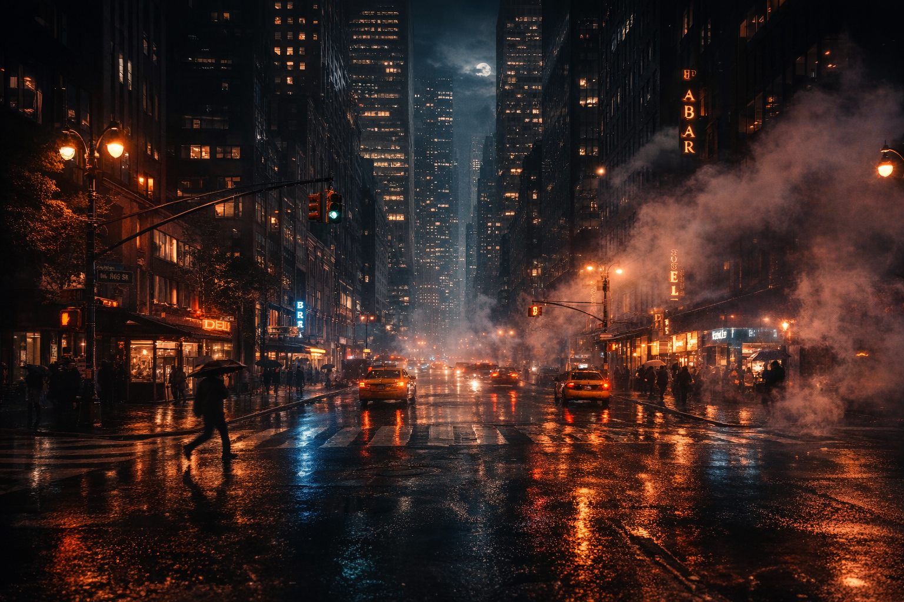

Midnight in the City
A visual essay on silence, light, and movement after dark.
The City Changes
The city softens at night. Shadows stretch, streetlights hum, and windows glow like quiet beacons.
Reflections shimmer on rain-slick pavement. The hum of distant traffic becomes a lullaby for those awake.
“Cities have their own heartbeat after midnight.”
The People
Some move with purpose, others drift without urgency. The city transforms them, and they transform it in return.
Wanderers
They trace the edges of light and shadow, noticing the details daylight hides.
Observations After Midnight:
- Flickering neon reflected on wet sidewalks
- Steam rising from subway grates
- Quiet windows glowing in high-rise apartments
Each moment is a fragment of the city's nocturnal story — ephemeral, delicate, and luminous.
After Hours
The night does not hide the city. It reveals layers invisible in daylight. Every shadow, every light, every reflection becomes a story.
Traffic slows, the air hums with quiet energy. Alleyways whisper of journeys begun and journeys paused. The city is both still and alive.
When morning returns, it does not erase the night. It layers another narrative on top, but the echoes remain for those who listen.